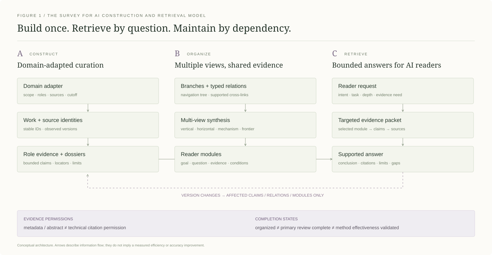

跳至内容
s
↗
Survey for AI
◇ 构建方法
⌘ 可复用 Skill
◎ RSI 实例
↗ 数据与版本
EN
↔
◐
☰
研究方法
01 / 框架介绍
02 / 构建方法
03 / 可复用 Skill
02 / 构建方法
v1.1.0 · 2026-10-23
从领域问题，到有依据的回答。
七个相互衔接的步骤。每一步定义输入、产物与验收条件，保留证据权限与未解决问题。

图 1 · 信息流与证据权限。概念架构不代表已测得的效率提升。